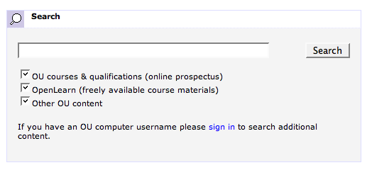
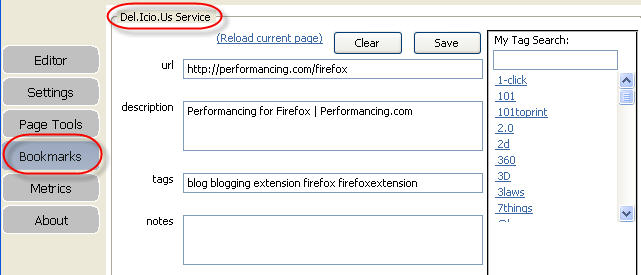

September 26, 2007
"How Do I..." - Instructional Video Search
A recent TechCrunch post - Graspr Steps into the Crowded Instructional Video Ring handily grouped a set of links to different instructional video search websites. [UPDATE - in an update to the original post, it also links to How do I... :-)]
As I've been looking for a reason to check out any recent changes to the Google Custom Search Engine tool, I thought I'd use those sites to seed a tiny vertical instructional video search engine - How do I....

Ideally, of course, the results would have small, embedded preview windows of the video clips, in the same way that embedded videos are displayed in the main Google listings, for example...
Still, for a 20 minute hack, I guess I can't be too fussy...
PS the logo was created using the Web 2.0 Logo Creatr.
PPS it's simple enough to add the search box to your own page:
Just use the following code in your own page:
<!-- Google CSE Search Box Begins -->
<form action="http://ouseful.open.ac.uk/howdoi" id="searchbox_009190243792682903990:qppoopa3lxa">
<input type="hidden" name="cx" value="009190243792682903990:qppoopa3lxa" />
<input type="hidden" name="cof" value="FORID:9" />
How do I <input type="text" name="q" size="25" /> ? <input type="submit" name="sa" value="Search" />
</form>
<script type="text/javascript" src="http://google.com/coop/cse/brand?form=searchbox_009190243792682903990%3Aqppoopa3lxa">
<!-- Google CSE Search Box Ends -->
September 06, 2007
Dynamic Google Custom Search Engines
For some reason, I haven't been tracking the Google Custom Search Engine blog which is stupid, stupid, STUPID, because the service now provides plenty of searchfeedr-like components as Lego blocks. I half twigged this in Google Custom Search on the Fly (just like searchfeedr....err?) but didn't really grok the power of it until just now, whilst looking through the Google CSE documentation, and this post on the CSE blog - Custom Search Engine APIs.
The post began innocuously (?!) enough: "With our new Linked CSEs, we are exposing the API to create and control CSEs."
Then the hints start to drop: for example, using the original CSE, "[i]t was difficult to use other data sources such as iCal, RSS, Google Base, etc. to programmatically create CSEs."
True...
So get this: "[Y]ou can now specify your CSE using a ... parameter that points to a URL, anywhere on the web. You update this URL at your end and don't have to upload it or edit your CSE using our tools. The URL can take arguments to produce dynamic CSEs, based on the current page, the current user visiting your site, etc. ... You can use any script you want, or reference a static file, when creating your CSE."
Cool - so now I can define a "live" CSE using my own dynamic PHP script, say, and use it to power a custom search... that is, I could now build something like searchfeedr using a CSE...
How does this work? With Linked CSEs, you designate a CSE specification URL with each search request (as a hidden form field in your search box HTML code). Google retrieves the CSE specification from the URL when your user searches in the CSE. We cache and refresh the results so that only the first search to your CSE incurs any delay. The flexibility to specify how your search engine should behave, just when your user is doing the query, using whatever data sources you want, opens up many possibilities.Possibilities? For coders, maybe. But that said, it's still quite a niche community. Writing the link scraping and feed parsing scripts to grab the links to feed in to a dynamically created CSE definition file is not likely to appeal to many people...
But hang on:
You can use our makecse tool to generate CSEs from different sources of links:
- HTML: http://www.cs.berkeley/~russell/ai.html
- RSS: http://reddit.com/.rss
- ATOM: http://lipstadt.blogspot.com/feeds/posts/default
- OPML: http://medicalconnectivity.com/gems/blogroll.opml
You can combine multiple sources of links using our makeannotations tool and the <Include> tag. For example, its easy to create a search engine from the links on the front pages of techmeme, slashdot and digg.You can write your own tools to produce <Annotations /> XML from other data sources such as Google Calendar or iCal feeds, Google Base or any other structured source of information.
You can automatically generate any number of CSEs, each possibly tuned to a particular user. For example, we've created a sample that builds a CSE from a user's digg.com friend network and submissions using the Digg API. Try it out and view the source. This makes use of two simple python CGI scripts:
- diggannos.py generates <Annotations> from the specified user's submitted stories
- diggcse.py generates <GoogleCustomizations> from the specified user's friend network. For each friend, it generates an <Include> element pointing to the appropriate diggannos.py URL
The post closes with this: "Linked CSEs are a very big step for Google Custom Search."
They're not wrong...
If only I had a clear week or two to be able to play with this...
August 04, 2007
Co-presenting Search Results on Timelines and Maps
In several previous posts, I've looked at the way timelines are being used to display search results, as well as timeline and map combinations, as well as demonstrating a dual Google maps and timelines search page:

Whilst I was searching for Google maps circle overlay scripts for the previous post on plotting foot and mouth exclusion zones, I came across this postpaper on Extending Mashups to Visualize Patterns in Temporal Data.
Many datasets are now published as streams of time-stamped, geo-encoded events using GeoRSS. To understand patterns within this class of data, we have taken ideas from mashups and extended them to develop new visual components that present live geospatial data in novel ways. The components are interactive, live, linked and contain many novel features for understanding temporal and geospatial patterns in event data. The components are light-weight, thin client, Web 2.0 AJAX technology and are suitable for analyzing both on-line streaming and off-line static datasets. Our work expands traditional geospatial mashups to include timeline, time wheel, and graph mashups for real-time time streaming data.
The paper describes several interesting ways of combining geo- and temportal data, and is well worth a read. Here's a second, related paper: Extending Mashups to Visualize Patterns in Temporal Data.
Quite by chance, my last feed reading session of the day turned up a post on SEO by the SEA about Google Timelines, Fact Maps, and Fact Relevance Rankings:
DISPLAYING FACTS ON A LINEAR GRAPHUnited States Patent Application 20070179952
A set of objects having facts is established. Facts of objects having positions in a order are identified. Some facts explicitly describe the positions in the linear order, while are facts do not explicitly describe the positions. The facts are presented in the order on a linear graph, such as a timeline. Facts of the objects describing geographic positions are presented on a map.

It'll be interesting to see how this all plays out...
July 09, 2007
Status and Intent: Twoogle
One of the things that I think contributes to the stickiness of Facebook is the way that changes to the status of your "friends" are displayed in your personal newsfeed.
"Status" messages have long been available for instant messaging clients, allowing users to type in particular status messages themselves (as in Facebook) or letting a script update the status message automatically depending on what the user is currently doing.
For example, I use the Adium messaging client on a Mac. When I'm listening to Last.fm I tend to switch on the script that posts details of my recent listening to my IM current status line. Scripts are also available that display the URL of sites you have recently visited in your browser, and so on.
A week or two ago, Twitter was all the rage in status declaring circles, and it too offers a snapshot of your current status (I expect there is a Twitter Xtra for Adium by now that uses your most recent tweet for the IM status. I don't know if the Facebook Twitter application updates your Facebook status?)
Anyway, what came to mind last night was an idea for augmenting search queries with search intent information. When I do a Google search, I'm usually searching for a reason. Google uses all sorts of information from my personal history, etc. to try and optimise my search results. I'm sure some of the secret sauce also tries to identify intent.
So here's a fusion of status updating and personalised search: when I go to my search engine, before I start a search, it asks - "what are you doing?"; the result gets posted as a status message, and is also used to help tune the search:
What are you doing?
Tony is: looking to buy a Nintendo wii
This "statement of intent" status message can then be used to scope the search.
Here's how it could be wired together:
- answer what you're doing;
- the result goes two ways: 1) to your status announcer(s) (Facebook, IM, Twitter, etc); 2) (maybe after some processing) into the search query either: i) as augmenting terms; or ii) as a preliminary search - search queries under this intent then act as "search within results" queries to refine the original statement of intent search;
- you start searching under the current intent.
In effect, the statement of intent seeds the search to produce some intention laden keywords or search facets, which are then added to each of your actual queries - two step intentional searching/explicit intent searching.
Revealing the statement of intent via a public status message also allows members of your public network to feed live personal recommendations into your search results, leveraging online contacts as a potential "live people powered search engine".
Hmm - this could be interesting - after posting a 'statement of intent', aggregating queries designed to satisfy that intention across a social network. We all use slightly different terms to search for the same thing (which is how the "related searches" offers for a particular query are powered), so a posting of a "search intent" status message could also act as a weak request for members of your social network to reply with suggested search terms. These terms are then aggregated to help tune or augment your query. In this case, the social network can support the search by several means:
- suggesting relevant search terms, which "the algorithm" can use to tune the main user's query;
- suggesting relveant URLs - which can seed a "related links" factor in the search.
I wonder if the Google T&C allow Google to mine your FOAF network and use their personal search history as weak factors in your own personal search, under the assumption that your friends are likely to have similar interests?
Martin sort of suggested something similar to 'live social network recommendations' in a post on the educational relevance of Facebook earlier today: And the winner is ..... Facebook:
For example, I see that John's status is 'struggling to understand how analogue to digital conversion works.' I see that Davina has added the analogue to digital conversion animation to her learning resources, so I recommend it to John. I look at Davina's learning resources and find a tutorial on Ajax, which I add to my own and I also post on her wall that I have used it. Peter has also posted on her wall, and invites me in to a chat, as he is using it too. And so on.
Tom Heath is also doing something not totally unrelated with Revyu, as told here:
Tom Heath Talks with Talis about Revyu.com and the Semantic Web.
PS Facebook Answers: "Ask questions and get quick answers from your Facebook friends. Answer questions and earn points. See how you rank against other Facebook experts." How long before a combined status update'n'ask app (assuming status updates are accessible via the Facebook API???)(?
June 28, 2007
Google Custom Search on the Fly (just like searchfeedr....err?)
Just spotted this on the Google Custom Search Engine blog, which I haven't visited for a while:
You can now create a CSE by simply placing a small piece of tailored code on a page on your site. With that one piece of code, Google's search technology will automatically include in your new CSE all of the sites you have linked to from that page, creating a dynamic, powerful and tailored search experience really quickly. Moreover, your new CSE will update itself periodically to include any new links added to that page.
I experimented with something related to this as PageSearch, the context that originally gave me the inspiration for the idea of naturally occurring search hubs:

(Here's a link to the first time I wrote about it, I think: Rollyo Portable? PageLinks Search, on November 10th, 2005. Demos soon followed, of course... I also seem to remember mailing Rollyo about the idea at the time and got no reply. Are they in the deadpool yet, I wonder? Must check...;-)
The Google CSE goes a step further by allowing you to add links from pages to a growing search engine; in this way you can easily (effortlessly) build up a search engine that covers only and any sites you link to from a blog, for example.
I also experimented with ways of tuning the search, so users could drop particular domains from the search results:

(Another thing to mention about searchfeedr is that is lets you search over the pages that are linked to from a particular page, or the domains those pages live on. Searchfeedr also gives you the choice of which search engine you want to use...)
Today, the Google Custom Search folks opened up an Google on-the-fly custom search engine API that lets you define a "pagesearch" CSE via a URL.
I used a similar approach for searchfeedr - everything is handled via the URL, which makes writing bookmarklets easy and also means you can bookmark a particular search.
In addition to PageSearch, searchfeedr also demonstrated searches over the pages that linked to a particular page (linkSearch):

And of course, searchfeedr will also accept page URLs or domains as the search limits for a search via an RSS feed, originally prototyped as deliSearch:

Searchfeedr also attempts a bit of searchfeedr ESP when you send it a URL without specifying a link search, page search or RSS/feed-powered search.
More recently, I've started Pipe-ifying the searchfeedr backend: searchFeedr Pipes.
Come on Google - KEEP UP....
PS missed this in my quick skim of the most recent on-the-fly post:
You can use our makecse tool to generate CSEs from different sources of links:
* HTML: http://www.cs.berkeley/~russell/ai.html
* RSS: http://reddit.com/.rss
* ATOM: http://lipstadt.blogspot.com/feeds/posts/default
* OPML: http://medicalconnectivity.com/gems/blogroll.opml
Ho hum... I knew I should have spent a bit more time on Searchfeedr...
Information At the Point of Inspiration...
If you've ever been to a Snapshots enabled page, you'll be familiar with the idea of being able to pop up a preview of a page (or RSS feed items from the page, or WIkipedia page summaries etc.) by hovering your cursor over a link in the page.
I have to admit I have disabled the service in my browser - I find it way too irritating...! I do think that following a link into a pop-up light-box has great potential for certain sorts of link, though: Interaction Design: Now Follow this Link.)
The Snap-shots tool (and others of its ilk) are love 'em or hate 'em services I think. I experimented with a tool in this vein some considerable time ago - popup links were intended to provided a shortcut way of linking to several items on a particular new story, but I never really pursued it:

(If I was tinkering with something similar now, I'd probably be pulling content in from a meme tracker...)
I also dabbled with an idea for being able to search over the links that were referenced in a page, or that linked to a page (demoed a couple of months later as searchfeedr), and could see all sorts of potential for services like Y!Q contextual search, which augmented Yahoo! searches made while viewing a particular page with additional contextual information.
Anyway, anyway,Yahoo! just introduced something new to their mail service - Yahoo! Shortcuts - which is maybe interesting from an online, text heavy course material design point of view (where tooltip glossary items are often about as interactive as things get).
What Yahoo! Shortcuts do is sniff out particular sorts of information in a mail message, and linkify them in an appropriate way. For example, addresses suddenly become links to pop-up maps, and pop-ups to news summaries for particular organisations are also possible.

(Hmm - ok - a check of my old blog has a prototype for that too: UK Postcode Linker Using Greasemonkey - a Greasemonkey script that augments UK postcodes appearing in a page with links to a map. There are lots of other related browser extension out there too.)
Google do something not totally dissimilar in Gmail - enabling document attachments to emails to be opened in Google docs (though not in a pop-up).
I guess what the Yahoo announcement did for me was to remind me about the possibilities for automatically augment pages with links to/pop-ups containing contextually relevant information.
Not overloading the page with links and pop-ups is something that needs to be borne in mind. But I could imagine a sidebar tool that allows you to enable the augmentation tools and then, when you hover (or hover and click over, or key press over) particular items in the page, the sidebar could be populated with relevant additional content.
From looking at my blog stats, I know readers rarely follow links; and course teams here don't get to see stats of how our students use our online materilas, so I have no way of knowing whether anyone clicks through outgoing links from Beyond Google, for example. Whether things like Snap do improve click-thru, I don't know. But being able to engage people with what are essentially hypertext "footnotes" and "endnotes" is something we need to work on, I think?
Okay - so this is all a bit vague, and I guess I need to do a demo to work out exactly what it is I mean... but no time to do that at the moment (morning coffee break is over...;-)
June 19, 2007
OU Search Engine
Idling with the OU search engine the other day, I thought I'd do a search for the simple term blog just to see what it turned up... Here's a link to the actual search query:

Hmm - how about the second results page?

Err...

"Oh, for goodness sake...!"

AAAAAAAAAAAAARRRRRRRRRRRRRGGGGGGGGGGGHHHHHHHHHHHHHH....

Now I have nothing against Marc's blog, but for a "novice" searcher, this sort of results listing is, IMHO, completely unacceptable...
Although it's maybe handy for making a teaching point on our infoskills short course (TU120 Beyond Google)?
In particular, here's how a little bit of knowledge about search query construction helps matters - simply add a -eisenblog term to the search query to filter the results:

(Err, unless you are logged in to the OU intranet, of course, when the first two pages of results point to Search results - Elementaries - The Watson Blog....!)
In fact, this teaches something even more powerful too - the idea of subtractive (excluding) filters applied incrementally to a set of search results to exclude items that contain a particular result, as opposed to only pasing resulkts that necessarily include a particular search term.
June 01, 2007
Google Maps and Timelines - Side by Side
A quick follow up to Google Timeline and Map Search Results Views to post a link to Google maps'n'timelines, which will take a single query and display the Google experimental timeline and map query results side by side:
What would be neat would be a timeline RSS output that could be added in to a mapplet?
See also the SearchTab Display of Several Web Search Engines.
May 22, 2007
More Timelines: oneTimeLine and the BBC British History Timeline
Picking up on a post from last week about timeline search displays, I just received a heads-up to a search intermediary - OneTimeLine - that "crawls the web and identifies events in time. When you type in a search, onetimeline matches up the words to events it's identified and displays them to you as a timeline."
Here's the English Civil War battle query:
The result item links click through to the original content, whether it's on wikipedia (it's not really surprising that a lot of the results are from there ;-) or an arbitrary website.
I'm not sure where onetimeline is pulling its results from, but it'd be quite neat if it was a custom search engine that users could inspect...
[Update: the onetimeline folks say: "We're using the Amazon Crawler over at http://awsp.alexa.com from which we're indexing Wikipedia, BBC, YouTube and a custom timeline/history search."]
I'm reminded that one of the criticisms levelled against Google Scholar, for example, was that users can't tell what journals/sources are included, unlike commercial academic search tools (or even Windows Live Academic), which do disclose the search domain.
As with the Google view:timeline switch, it would be really handy if the results were made available as a "temporal" RSS feed of some sort (or even better, a geotemporal RSS feed), such as a feed that could be piped directly into a Simile timeline widget.
Another timeline related tool I've discovered this week is an interactive British History timeline from the BBC.
The tool lets you explore significant events in British history either via the timeline, or by searching on dates or key events - english civil war battles gives the following, which suggests to me that the search engine could do with a little tuning...

Another way of navigating the timeline is via predefined journeys:
Each defined journey contains a series of items, ordered naturally enough by date:
At the moment, the timeline links to short, textual resources - I can't wait to see if they start incorporating audio and video resources too :-)
There is considerable opportunity, I think, for allowing students to create their own timelines (and maps) of key events in whatever subject they are studying, particularly if they can enrich the timeline with multimedia resources.
Maps and timelines provide useful scaffolding for organising information and helping students make sense of - and a story out of - the things they are learning.
Let's just hope this tool doesn't go the way of BBC Jam...
PS here's yet another timeline display (via Kiyo's Blog); a timeline search limiter from the FT:
I could see this sort of interface being handy for visually limiting search results in an academic journal or conference database, for example...
May 17, 2007
Google Timeline and Map Search Results Views
Just over a month ago, I posted about Visualising Geo-temporal RSS Feeds, in which I pondered on various mashup interfaces that could be used to display data contained in an RSS feed on a split view containing a timeline visualisation of the feed items, as well as a map view depicting the geo-location of each item, like this Earthquake mashup by Jörn Clausen which combines a Simile timeline with Google map:

Something I didn't really explore in that post was the application of timelines and maps to search results (the only time-based search engine I know of so far is TimeSearch, but there may be others..for the geo view, I'm not talking about local search; I'm really considering fact based searches, which may already be possible via Yahoo pipes map mashups).
Anyway, Google's recent flurry of search related announcements included a pointer to Google Experimental Search, which is to Google's Search interface what Google Labs is to applications - that is, a listing of all the stuff Google are playing with in public, but is yet to make the Google front page.
A couple of the items on the Experimental page relate closely to geo-temporal visualisation, although as yet there is no split screen view. However, what there is is this....
Consider a search on english civil war battle, for instance...
Search for english civil war battle with the experimental view:timeline limit:

Search for english civil war battle with the experimental view:map limit:

When I get a chance, I'll do a split view with each of these results in a separate iframe, driven from the same original search query. [UPDATE: here it is - Google maps'n'timelines side-by-side]
What would be handy, of course, would be an RSS version of these results, with the geo- and temporal data explicitly included somewhere. The aforementioned "geo-temporal feeds" post mentions a couple of (probably not very good) ideas for carrying the temporal data by usurping each item's posting time to carry the date the result applies to - such as the date of the first moon landing for a search on that term* - rather than the time the query was made, or the timestamp of the page returned as a result, for example.
I don't know if the Google SOAP interface is still working for those of us who have keys (I haven't checked for a bit), but if it does, I wonder if these search limits work with it?
*Hmm - I wonder if the view:map interface will end up displaying results using http://moon.google.com/ or http://google.com/mars if they are more relevant?! (It doesn't appear to at the moment - I checked ;-)
May 14, 2007
Google Personal Web History: My Panopticopedia
The all-seeing Wikipedia defines a panopticon as follows:
The Panopticon is a type of prison building designed by the philosopher Jeremy Bentham. The concept of the design is to allow an observer to observe (-opticon) all (pan-) prisoners without the prisoners being able to tell if they are being observed or not, thus conveying a "sentiment of an invisible omniscience".
Several weeks ago now, Google started rolling out their personalised search service, which for logged in users biases your Google search results listing according to your preferences.
At the time it was released, the service drew on users' search behaviour to tune personal results.
These preferences are built up over time as Google learns about you and your online behaviour however it can. Originally, personal results built upon the way users used Google, and the result links they clicked through. But now all your online behaviour can be taken into account if you so choose:
Web History helps deliver more personalized search results based on what you've searched for on Google and which sites you've visited.
Google's Web History service will collect - via the Google toolbar - a history of all the web pages you've visited so that you can easily search over the places you've been.
(And yes - the capitalisation of Web History is correct according to Gogole. Here's more info about Google Web History if you're interested... or scared....)
The usefulness of this is undeniable - how many times have you tried to relocate a page you visited last week, or last month?
This itch is one that prompted Joshua Schacter to scratch when he set up the delicious social bookmarking service; it's also one that's addressed directly within the Flock browser, which has an inbuilt page cache, index and search utility: Search Browser History in Flock.
I don't know whether the Web History service also indexes PDF files I've downloaded, though, which I could see being a useful feature. (In fact, I'd be happier letting the Goog search over the PDFs I've read, rather than tracking the sites I've visited.)
If you're that way inclined, you can publish your live browsing history via an RSS feed, although Google's not the only service to offer this, as for example demonstrated in this recent review of Cluztr on TechCrunch, which describes a clickstream collecting and publishing service in which "[e]very site you visit is recorded and posted live to the Cluztr site in a social bookmarking style format, but without the need for active involvement".
Although most of us would be uncomfortable with publicising everything we're doing in the way that justin.tv does, there does seem to be something in the air at the moment with respect to "look at what I'm doing" apps.
For example, I've started feeding the 'last played' info from last.fm into my IM status line, and could imagine wakoopa (reviewed here by Techcrunch (again!)) being exploited in the same way to show what desktop application I'm currently using.
I guess the next thing we'll be seeing are Twitter application plugins that accept a highlight-right_click-twitter_this input and let you tweet seemlessly... (Just so you know, I haven't got into Twitter - and don't intend to...)
Whilst Web History can be used to track out behaviour via the Goolge toolbar with our permission, I suspect that Google cookies can also be used in principle to track our web useage without our opt-in permission?
Google has multiple ways of getting these cookies onto our machines - via Google properties themselves, via web pages with Google Analytics installed, or Google Ads, or - soon - banner ads from the company presumably soon to be formerly known as DoubleClick: Google go for DoubleClick banners. They're also gearing up to track your eyeballs as you look at outdoor advertising, maybe?!
Maybe this is something that will become a user preference - "add to my Web History if you see me"? Presumaby it'll happen in an anonymised fashion anyway. to improve the Google search and ad-serving experience?
Paranoid - me? Nah... because I know it won't get as bad as punitive personal pricing where I have to pay more for goods the "system" knows I want...
Anyway - back to the point in question, which was - err...?! ;-)
Ah yes - collecting everything we do on the web, storing everything we see...
Like the MyLifeBits project from Microsoft - which looks at how we might organise a personal lifetime data store. That is, a store of everything we have seen, or read, or visited: a personal panopticopedia (from wp again: To the ancient Greeks, Paideia was "the process of educating man into his true form, the real and genuine human nature.").
If we limit the lifetime data collection to things we have seen and learned from, maybe we'll all end up with our own Panopticopedia... (via Google personal search, of course...)
"This is your web life."
April 19, 2007
OpenLearn Unit Search Hub
Picking up on the previous post, I knocked up a Yahoo Pipe that will use an OpenLearn course unit as an outlinks search hub, demonstrating an automated way of extracting value from a course unit: OpenLearn Unit Outlinks Search Hub Pipe
The pipe uses this OpenLearn link stripper XSLT to extract all the outgoing links from a course unit, then feeds these into a Yahoo Search pipe, which uses the domains as search limits for the search (just as deliSearch does with links pulled in from delicious and searchfeedr does with links pulled in from an arbitrary feed:

I'll add a link to a Grazrscript form for this search pipe to this post when I get a chance to cobble one together.
I'll also have to try and find 10 mins somewhere to add it to the OpenLearn_XMLProcessor.
Enterprise Search Appliance Powered Custom Search
As part of the OU's ongoing federated search project, a query just came round asking for thoughts about including results from a third party web search engine as one of the results options. Presumably this would mean adding additional options to the current interface.
For example, another option here:

and another results tab here, maybe?
In fact, (quick aside!), just look at those results a little more closely...

See these?
- http://www3.open.ac.uk/courses/bin/p12.dll?C01TU120 - 27.3K
- http://www3.open.ac.uk/courses/bin/p12.dll?C02TU120 - 27.2K
- http://www3.open.ac.uk/courses/bin/p12.dll?C01iTU120 - 27.2K
- http://www3.open.ac.uk/courses/bin/p12.dll?C01eTU120 - 27.3K
- http://www3.open.ac.uk/courses/bin/p12.dll?C01wTU120 - 27.3K
Customised pages with an additional pricing info column for particular territories: CO1i - Ireland; CO1w - Other Countries; CO1e - Continental Europe:

(I'm not sure what the significance of CO1 and CO2 is? Maybe next and next but one presentation when they are less than 6 months or so apart? I donlt know.... CO2 works with the territory switches, though, so I could have listed far more results....)
Anyway, anyway - who gives a !$%&! about those duplicate entries? Why use those results items/screen real estate in such a wasteful way?! Aaargggghhh...
Here's one way that multiple hits for the same course might be addressed - sublinks for the different territories off a primary hit:
Okay - back to the preamble to the point of the post...
If results from a third party search engine were to be included as a results listing in this way, what criteria would be used to choose the provider? There are obviously opportunities for a commercial partnership... or would this bring a potential bias into the provision of web search results?
(There's a corollary, too, maybe?, in the area of the library's own federated academic search tool, too - should Google Scholar and Wndows Live Academic be included in the listings? Or is that different.....?! ;-)
Technically, there is the issue of how the results are actually pulled in and displayed - via an API, presumably, which would be okay if all the players offered a SOAP or XML returning RESTful API... (And would branding from the search engine have to be displayed to comply API T&C? If so, how prominently?)
The matter of sponsored/paid for links is another issue, depending on which search engine is used to provide web search results. Would these have a place in an OU published page? Or maybe there's an opportunity to get a bit of revenue in... dangerous territory, methinks...
My immediate thought was that a custom search engine might be the way to go, e.g. using something like Google Custom Search Engine for a quick'n'dirty proof of concept.
This could be domain limited over all the outlinks from OU course materials and research papers for example, or even just by extracting *all* linked to domains from *all* the docs on the .open.ac.uk domain, and then using these to seed the custom search engine?
(Memories of Social ROUTES spring to mind here, as well as Making the Most of Links from Online Course Materials to External Websites.)
In fact, the more I think about it, the more I like the idea of developing an OU custom search engine. If nothing else, it would allow us to make a claim about leading the way in enterprise powered, social search engines and maybe get a bit of press out of it?! ;-)
It could also be built up from 'satellite' course-powered search engines.
We could maybe even get a partnership project going with one of the big search co's?
For example, if the Google search appliances can scrape links from an internal network and then feed these directly into a Google custom search engine, you have a really quick way of generating a custom web search engine.
Yes - there are dangers that you isolate yourself from those bits of the web you don't link to from your site, but that could be addressed in part by adding the domains that link in to your site as additional custom search limits?
And for the full web search experience, you could just use Google Google anyway... (but even there, Google ground truth can be optionally personalised away...).
March 15, 2007
searchFeedr Pipes
A quickie post from a 5 minute hack - a generalisation of the deliSearch pipe so that it will take any feed and search the sites listed in the feed (a searchfeedr style search :-)
Here it is: searchfeedr Pipe.
This pipe will search over all the sites that are listed in the supplied feed.
Other searchfeedr pipes include:
- the cloned deliSearch Pipe (blogged here) that searches the sites listed in a delicious feed when supplied with a delicious username/tag pair;
- the PageLinks search pipe, that will scrape the links from a page with a particular URL and will limit the search to just those sites.
- search sites that link to a domain, given its URL;
- search sites that are linked to from a domain, given its URL. The linkto and linkfrom domain searches are via Live.com search;
There's also this handy OPML searchfeedr style pipe from Chris that takes an OPML URL and passes the OPML feed through an OPML2RSS converter, then limits the search to sites contained in the resulting feed.
The searchfeedr search engine at searchfeedr.com is currently cobbled together out of scrappy bits of code, but I'm hoping to rebuild it using Pipework. Here are more than a few posts on searchfeedr if you want to see how it evolved.
March 02, 2007
Personalised Search
Several weeks ago now, Google started pushing personalised search by default to holders of Google accounts:
We have two main ways of personalizing your Google experience. First, you can customize products and services like the Google Personalized Homepage. Personalizing your homepage gives you the at-a-glance information that you care about - such as your latest Gmail messages, news headlines, or to-do list = right at your fingertips, just the way you want it.Second, we offer automatic personalization through things like personalized search and recommendations. Our goal with these types of technologies is to make your Google search experience better based on what we know about your preferences, without you having to do
any extra work.Today, we're taking another step toward making personalization more available to you by combining these two into a single signed-in experience. Now, when you're signed in, you'll have access to a personalized Google - one that combines personalized search results and a
personalized homepage.Keep in mind that personalization is subtle - at first you may not notice any difference. But over time, as the search engine learns your preferences, you'll see it. For example, I (Sep) am an avid Miami Dolphins fan (no joke). Searching for [dolphins] gives me info about my favorite football team, while a marine biologist colleague gets more information about her salt-water friends.
Danny Sullivan did the first critique of the new Google personalised search that I saw (no surprise there, then! ;-) which I heartily recommend if this service is new to you and here's another related discussion about customised search engines for a broader view.
Something I haven't seen raised much, if at all (or maybe I just missed it?) in either the library or e-learning blogs I follow are the implications for education when a large number of people start to regularly use personalised search services.
One of the things I've been thinking around for the last year or so is how we can make better use of search and other content/resource discovery strategies for: a) identifying content we can reuse third party materials in our own course materials; b) automatically pulling relevant content into course materials in a 'live' way; c) helping students discover appropriate resources for themselves in effective, efficient and satisfying ways.
For the purposes of the current post (the rise of personalised search), this third factor - helping out students search more effectively for resources - is likely to be affected if consistent Google 'ground truth' results are no longer necessarily what everybody sees if instead they are all receiving personalised/tuned results.
Using Google without signing in will return the 'ground truth' organic search results for a particular Google domain, at least for the foreseeable future, but the presence of effectively persistent identifying cookies on user's personal machines that even there is the opportunity to serve customised search results, as well as personalised adverts.
Conceptually, too, will the rise of personalisation affect the way we regard search engines that offer similar results. One of Google's great selling points has been the quality and persistence (consistency) of the results it returns.
So much so, in fact, that many users use search engines for navigation, as well as the basis of recommendations to other people for how to find a particular site ("just google XYZ and it'll be in one of the top three or four results").
Of course, as educators, we want to develop information skills that enable people to use a wider range of search tools that focus, for example, on academic and commercial content collections (as Beyond Google does, in part).
But we also need to recognise the fact that, at the current time, most of the people, most of the time, use Google (or one of the other major search engines; but predominantly, I think, Google, if my web stats are anything to go by).
Another aspect of Google's personalised search implementation (as I understand it) is that profiling information gleaned from Google Desktop Search and GMail (where available) can be used to further customise Google Personalised Search results.
Academic customisation is presumably a possibility too for published academics. If for example my Google credentials can be correlated with any published papers I have written (along with papers that I have cited - or that have cited me) then this information can be used in turn to personalise results further on academic searches (such as academic/scholar searches or maybe even the book search).
This is the flipside of expert search, where for example I search for a person who is expert on a topic and use their published output as part of the ranking mechanism.
["Searchers like me" - useful for the enterprise?]
On a final note, I posted some days ago about discovered storage, online storage I get 'for free' within any online applications I use. [Here's a link to a graphic the likes of which I wished I'd drawn up to illustrate that post: check it out] It strikes me that personal search histories could be seen to represent pre- or auto-populated hidden storage; that is, storage space that is accessible to me on a 'read' basis, and only indirectly on a 'write' basis (that is, whenever I perform a search/click-through to a site from a link on a Google search results page).
February 09, 2007
deliSearch Pipe
Yahoo! Pipes are back, and already there are some interesting pipelications (?!) appearing.
One that particularly interested me was this del.icio.us flavored web search, that lets you run a site limited search over the domains listed in a delicious bookmarks feed.
A deliSearch pipe, no less... already ...
Here's what it looks like (and here's a clone I've taken and renamed: deliSearch pipe).

I've started thinking about a wider set of searchfeedr pipes, but not had a chance to build any of them yet (maybe there are some equivalents already on the Pipes site?).
Update 10/2/07: here's a pageLinks Search Pipe: supply a URL and a search query, and a search will be performed over the domains linked to from the specified page.
January 24, 2007
New OU Search Tools
At a show'n'tell session for the new OU VLE yesterday (which in the best tradition of IT projects is largely late, under-resourced and, er, late) the new OU search interface was demonstrated. The service is live, but unless you're into that sort of thing you perhaps haven't noticed, or seen much new it for you. So here are a few things I spotted about it (more later when I get a chance to look at the Advanced Search tools).
If you are signed in to the OU website as a staff member, you'll get a search interface like this:

The course materials option is permissions sensitive and searches over what exactly, I'm not sure (more info when I have it/have dug a bit deeper...)
As a staff member I get to search 'all' OU materials; for a student regsitered on one or more courses, they would have options to search over the materials for each of the courses they are currently registered on. (If anyone can send me a screenshot of what a 'student' interface looks like, I'd appreciate that. Thanks Richard :-)

The other options are available to public/unauthenticated visitors to the site. The provision of the OpenLearn (not Open Learn?) materials search is an interesting - and welcome - one, though the rationale behind its provision is not clear to me.
The results page is a tabbed display over the fields selected for the search:

I don't like the the list above the results, particularly - I think something like the Clusty interface is far tidier:

Looking at the item level results, I think that emphasising the the search results is a good idea, but I'm not sure about the colour of the URL? I find it a bit dominant/too close to red (which pulls at the user's attention a little too much for my liking ).

I wonder whether any eyetracking tests were run on a monochrome mockup of the results page? For example, do most users use the URL to help them filter the results/choose the ones they are going to click through? (I don't recall reading a critique of this before - must chase that up...) Certainly, I'd expect that attention will be drawn to the URL in the current scheme by virtue of the colour, so it would good to know why/how users use this info, even if it's an unconscious use.
[Reflecting on this personally, I think I use the URL in a results item to see -
a) where the source is; I discount things like http//:my.site.is.brilliant.com/climateChange.htm
b) what the filetype is (for occasions when I'm after a known doc type and am too lazy to limit the search (does OU advanced search support filetype: limits, I wonder? :-)]
On a related issue, I wonder how (if?) users use the percentage relevance score to any great extent (and this metirc is relevant according to what, exactly?) Is the relevance score typically used by people when they are on page 2 or 3 of the results listing, maybe, as a guide for when to stop looking at lower results pages? Or evenm to judge whether the any of the results are relevant (perhaps reinforced by briefly clciking through to, and scanning over, one or two sample results?)
The page size (23k etc) is another of those features that I know I use it as a crib, on occasion. For example, when I come across a pdf or ppt file, I use file size as clue to how large the doc is likely to be, and infer in part from that how detailed it is and how long it will take to a) download; and b) read! In fact, I actually use filesize more rigorously than that, because I use it to decide whether or not I'll preview the document/skim it 'online' and either download it to read it later, bookmark the link, or print it off unread. (I tend to bookmark/download larger docs, skim smaller ones).
Looking at the bottom of the page, we get the search box pre-loaded woth the current search term:

While I'm all for this, I'd actually prefer it if the search box was at the top of the page too - (like on most search engines). I wonder if there is any reason for NOT doing that in this case? The current scheme forces you to glance over all the search results before you can run another search. For users who can discount the search as returning useless results by skimming the top two or three results, it's not obvious how to run another search if the search box is below the fold.
On a design point, the width of the Search again box is not the same as the width of the results listings, which jars on my eye a little? There are two alternatives here, I guess - to centre the Search Again? box, or make it the same width?
One final point is that the new OU search design is different to the 'new' Library search (developed last year):

I wonder if there is an intention to normalise/standardise these? Certainly, I'd expectLibrary search results to start to appearing in the main OU search tool at some point - the design seems like it has been set up to be extensible (though the lenght of checkbox lists may start to become problematic unless they are moved to a sidebar).
November 19, 2006
Collecting Third Party Website Statistics (like Yahoo's) with Google Analytics
Did you know you can collect web stats for any site - not just sites you 'own' - using Google Analytics? Well with a little bit of Greasemonkey magic (or a suitable browser extension) it seems you can.
Idly wondering whether I could set up my own shadow research project to study OpenLearn user behaviour, I knocked up a very simple Greasemonkey script to add a Google Analytics tracking script onto the bottom of any OpenLearn pages I visited:
// ==UserScript==
// @name Openlearn tracker
// @namespace http://ouseful.open.ac.uk/blog
// @description Adds tracking to openlearn pages
// @include http://openlearn.open.ac.uk/*// ==/UserScript==
(function() {
var b=document.getElementsByTagName('body');
var s=document.createElement('script');
s.setAttribute('src','http://www.google-analytics.com/urchin.js');
s.setAttribute('type','text/javascript');
b[0].appendChild(s);
s=document.createElement('script');
s.setAttribute('type','text/javascript');
var t=document.createTextNode('_uacct = "UA-******-*";urchinTracker();');
s.appendChild(t);
b[0].appendChild(s);
})();
It's easy enough to put this script into an extension format - for example using a Greasemonkey compiler.
Setting up the tracking on Google Analytics was easy enough too:

... as you can see:

For example, the first few stats:

I did wonder whether I was getting away with this almost legitimately because I have properly installed tracking on the OUseful blog, which lives on the open.ac.uk domain.
So I tried on a domain I have absolutely no formal relationship with (except for a handful of search API developer tokens!) - Yahoo.
A very minor tweak to the Greasemonkey script allows the Google tracking script to be added to the bottom of any page on the yahoo.com domain:

Setting up the Google Analytics account - and obtaining a tracking code - is easy enough:

And as you can see, tracking is working:

Here are some results:

You can see from the results above - and the header below - how the Google tracker script even manages to capture dynamic (search query) content:

[The search queries in the graphical view over multiple sites (p=plone+(site:www... etc.) are actually generated using the searchfeedr search intermediary, which is rapidly becoming my search interface of choice.]
What this means - among other things - is that if I can get you to install my extension, I can track your behaviour over my competitors' websites.
I can't really understand why Google Analytics doesn't at least check that you have installed the script on at least one particular page on the domain being tracked and which Google can poll when it feels like to check that the tracking is still officially sanctioned. I wonder if this is mentioned at all in the Google Analytics book?
Because it seems to me that there is no such check.
Now it may well be that I am in breach of Google Analytics Terms and Conditions, but people will play...
Just a couple of other things to note in passing - when the Google tracker script fires, it also seems to tell Google blogsearch what's going on:

And for OU internal readers, you can see a glimpse of the sorts of results that the Site Intelligence VBIS web analytics package gives for OpenLearn visitors here. [Background: OU adopts Site Intelligence web analytics tool]
November 09, 2006
Making the Most of Links from Online Course Materials to External Websites
At the request of the TU120 Course Team, I spent half an hour a couple of days ago extracting by hand the external links from the online course materials for the first week of Beyond Google and popping them into delicious.
Although the materials are generated from XML source files (and so automated link extraction is trivial) I did it by hand partly to see what observations I could make about what sorts of information might be available to support the automated tagging and description of automatically extracted links.
A secondary aim was to see what thoughts occurred to me regarding the potential reuse of linkrolls/link collections, and the extent to which we could:
a) provide linkrolls as part of an added value "product" to students;
b) exploit linkrolls within a course as an additional navigation aid (for revision, or catchup);
c) use linkrolls as a feed source for a course related customised search engine.
Anyway - here are the TU120 Week 1 links, and here are a few things that came to mind as I was bookmarking them:
1) Tagging is an issue:: there are various sorts of tags we can use to mark up these external links:
I focussed just on organisational/course administration links for this exercise, using:
- section and subsection numbers (1, 1.1, 1.2 etc;) but not subsubsection numbers;
- an activity tag for when a link was referenced in the context of an activity;
- maintext when a link appeared in the main text of a section; and
- furtherReading when a link appeared as an optional/further reading link.
I also tagged all the links as courseLink to show they were provided as part of the course materials.
My choice of tags was in part determined by the sorts of info that could be trivially automatically extracted from the course XML, because this sort of process should be automated if we are to offer course related link bundles more formally.
I didn't any 'semantic' tags; (sub)sections of the course are not semantically tagged either (even the XML markup is biassed towards presentation related tags, as you may guess if you've seen the OUschema that the OpenLearn course materials are being release as on the Labspace site).
It did occur to me that it may be possible to use services like Yahoo's content analysis/tag extraction service to offer tag suggestions for our content, but I haven't tried this yet. (There's another experiment for me to try with some OpenLearn content.. It would also be good if we could get visitors to the OpenLearn and Labspace sites tagging material? ;-)
It may also be interesting to use delicious (or other social bookmarking system) tag recommendations for a particular URL to help automate tag selection for particular URLs?
Ideally, though, external link bookmarks should be semantically tagged in a similar way to the context they appear in in the course materials/the section of the course content they came from. Semantic relations between links and the context they appear in within the course materials would then be preserved in a far more robust way that using section numbers: using tags like 1.1 are brittle, particularly if the content moves. Using tags like example+cluster+searchengine are far more robust, especially if that sort of sense can be extracted from the course material automatically.
2) Delicious displays results in reverse chronological order. I put the links into delcious in the order in which they appeared in the course materials, so viewing them gives a reverse presentation order view; the same is true when you pull links out of delicious via a web feed; I don't know if this can be switched to chronological order? It's easy enough to write a script that would act as a relay and reverse the order of links, I guess, so there's yet another thig for the to do list...
3) The links can be made available in several ways
- exported as bookmarks/favourites into a browser (for example, using nested folders of bookmarks organised by section, topic, or category), or viewed as live bookmarks;
- displayed in a webtop like PageFlakes or Netvibes, or viewed in Grazr; for example, here are several ways of using an OPML bundle to provide link navigation from a Grazr widget.

The navigation on the left actually shows different ways the links may be organised; note that when you get to the links, they are in reverse order, as discussed above.
Here are a couple more Grazr views:


4) It's easy enough getting the links out of delicious and putting them into a Google custom search engine like this TU120 search engine (week 1 links only, at the moment):

searchfeedr will also let you narrow the search down to 15 sites at a time, which would be ok for a section search; here's an example search over external links from TU120 section 1.1:
This exercise raised many more questions for me than it answered. For example,
a) how should we go about tagging link resources? One way might be to get students to add the semantic tags, and we could just provide architectural/administrative tagging? ;-)
b) user scenarios: how might students use linkrolls? How should we organise, distribute, promote, embed and/or link to external link rolls, if at all?
That databases and other resource collections have value in their own right is well known.
As we move towards more and more online courses, with course authors presumably continuing to deep link into third party sites (even if we are only supposed to link to the top level of a domain ;-) I think its worth asking how the knowledge locked up in linkrolls/link collections can be unlocked, as well as exploring ways in which further value can be added.
PS having put the links into delicious, I also realised I should have used Simpy. Simpy offers private groups, which means we can keep our IP locked up, even if we do use a third party social bookmarking service ;-)
PPS for newish readers to the blog who are interested in issues relating to the use of social bookmarking in formal education, you may be interested in reading Towards a Managed Social Bookmarking Environment in Higher Education.
October 24, 2006
Bootstrapping Google Custom Search Engines with searchfeedr
Google have just announced their Custom Search Engine rival to Yahoo's search builder and Windows Live Macros.
I've just had a quick play, and it's got far more going for it than I first realised.
The basic customisation lets you define the domains over which you want to limit search to, or prioritise search over. You can add up to a couple of thousand (I think) domains to your search engine, which puts the 15 or so that searchfeedr limits you to (and Rollyo doesn't offer many more) to some sort of shame... except when you consider that searchers rarely go beyond the first page of search results anyway...
Links can be added individually, or via a bookmarklet, by he custom search engine owner or their volunteers. Volunteers may be invitees only (Google going viral withthe marketing once again...), or the search engine can be open for anyone to submit links to.
Domains can also be excluded from the search engine (handy if you are using submitted domains for prioritised results in a general web search). Various filters can also be applied to URLs that are allowed as results, though I haven't tried this feature out yet.
Something else I haven't had time to try out yet are 'refinements':
Refinements are labels that you apply to web sites. They appear as a list of links above search results, offering users a way to narrow their search. When a user clicks a refinement label, the sites that you have labeled are given priority in the results. In addition to labeling sites, you can also specify additional words that are added to users' queries when they click a label, providing even more targeted results.
The look and feel of your custom search engine can be tweaked in several ways, including adding your own logo to the search box on the Google search results page. Your custom search engine can also be monetised (don't you just hate that word) using your AdSense account details.
One thing tht particulalry caught my eye were the bulk upload and XML configuration options. Adding links to your search engine one at a time can be rather painful, so google have provided the facility to upload links contianed in an OPML file. The example they give is of a Bloglines OPML (blogroll export) file. I assume this is a sideswipe at the relatively new 'search over my blogs' option that Bloglines started to provide via Ask.com...
Now a major constraint that searchfeedr has is the limited number of domains that you can limit a search over. However, by quickly adding a 'generate OPML' option that will generate a full* list of domains than a list artificially limited to 15 entries I can very quickly seed a more comprehensive Google Custom Search Engine:

*Err, that's not quite true, I limit the numer of links pulled down from delicious during a deliSearch.
Anyway, I posted the OPML generation extension to the searchfeedr interface, so if anyone uses to seed a Google Custom Search Engine with any degree of success or failure, please let me know :-)
October 21, 2006
searchfeedr Roundup - Save Your Searches on delicious
I've had this feature on the go for a week now, and there are still a few tweaks that need to be made, but I thought I'd post a quick screenshot to show how you can save, and pull in, saved searchfeedr searches and search profiles:

Whenever you make a search, you are provided with a link to save the current search on delicious. This may be a a link to the full search, or - of you omit a search query term in the right hand search box- a link to a search profile (for example, a search over the links in a particular delicious feed).
If you tag your search with the tag usr:searchfeedr, you can pull it into the save searches ("My Search Feeds") panel on the right hand side. To pull saved searches into this panel, enter your delicous user name, maybe with a tag or two to focus the saved search selection further. (In the example above, I am displaying searches from by delicious user account ('psychemedia'); I could narrow the listed saved searches by adding a tag, for example "psychemedia/ocw" to display just the saved searchfeedr searches that are tagged as 'ocw'.
When you click on the 'My Search Feeds' button, a cookie is saved containing that delicious user (or user/tag) information, so those search feeds will be loaded in automatically necxt time you return to the searchfeedr site with the same browser.
The 'Link to this query' option is a link to to the current searchfeedr page (including the search engine settings, search feed, query and 'search over' type). The 'Search URL' link is a link directly to the search engine results page for the current search using the selected search engine.
Results from any domain can be suppressed by checking the corresponding checkbox in the 'Domains (tick to remove from results)' area.
Finally, searchfeedr ESP is switched on by default. To switch it off - and gain access to linkSearch and relatedSearch - just click on the ESP link. Click on it again to switch ESP mode back on.
Enough for now... OpenLearn launches next week and there are a few things related to that I want to play with...
October 18, 2006
Microsoft Live Search and Domain Based Search Hubs
The graphic contained in this post on the Live Search LinkFromDomain operator suggests it all:
Green: LinkDomain:YourSite.com Yellow: LinkFromDomain:YourSite.com Blue: Either LinkDomain or LinkFromDomain Green + Yellow + Blue: LinkFromDomain:YourSite.com | LinkDomain:YourSite.com
You can try the terms out using this demo app.
I have to admit that when tinkering with linkSearch (search across pages or domains that link to a given URL), pageSearch (search across pages or domains that link from a given URL) and relatedSearch (search across pages or domains that are related to a given URL) my focus was on building search hubs around pages rather than domains, but these new toys from Microsoft Live may mean I need to rethink a little and try to support both?
I had been thinking about merging results from inlinks, outlinks and related links in a combined urlHubSearch tool, but the demo of macros showing links from one domain into another has got me thinking of all sorts of weird and wonderful potential search combinations...
And whilst following the various threads around the linkfromdomain operator, I also came across this quite old post on searching sites linked to from a blog. I'm still not totally clear how this service works, or what exactly it searches over, but the code is provided (using the Google SOAP search interface, no less), so I'll have to have a dig around inside it and see what's going on.
Maybe this will provide the incentive I need to move searchfeedr over to a web service driven interface, as well as the iframe/embedded original results page approach I use at the moment. (Although I do have a couple of demo apps that use the Yahoo Search API e.g. this flavour of deliSearch and this version of linkSearch - knock "ajax" off the latter URL and it reverts to the iframe results page)).
Adding domain or page based search hubs will undoubtedly complicate the integrated searchfeedr interface though, just when I thought I was starting to find a way of simplifying it :-(
Ho hum...
While on the topic of search, a couple of pointers to some new (ish, to me) search interfaces.
Clusty released a cloud view over their clustered results a week or two ago: Clusty Cloud Creator.
And the rather neat 'page preview in an iframe' interface for a selected result at snap.com seemed eminently sensible when I put it in the context of my Google Analytics results for this blog homepage - the majoirty of visitors coming in from Google leave within 10 seconds, presumably because the site is not what they were looking for.
And almost finally - one to watch, maybe: Google's experimental searchmash site. At the moment, as well as page links in one column, you get image based results in a smaller, right hand column. In addition, you can drog and drop the text results, possibly presaging some interface in which the users can help poor old Google out in improving its rankings (speaking of which - here's a simplified(?) take on how the ranking equation might work).
Windows Live Search OPML Generator doesn't go for drag and drop - though it could; this tool lets you search over feeds, then tick the ones you like and roll them into an OPML file.
Nifty, very nifty - and obvious, now someone's done it....
Wish I'd thought of it when I was playing with the OPML Feedrolled Persistent Federated Search and Social Bookmarking OPML Feed Roller tools.
Ho hum... with Live Macros looking like they could do all and more I wanted from searchfeedr, I'm going to need another trifle to play with...
Now I wonder, the OpenLearn open content project has its public launch next week...maybe there'll be some opportunities to tinker around that for a while ;-)
October 14, 2006
searchfeedr Does ESP...
I was determined to lay off searchfeedr for a while, but couldn't resist doing this half hour hack - an attempt at ESP... by which I mean, rather than requiring the user to select the sort of input that provides the search limits (delicious feed, web feed, or page feed, for example), the interface tries to guess what sort of search limit input is provided.
Here's the demo: searchfeedr ESP interface

(I know, I know, I said no more URLs and I'd stick with labs - but this removes the search limit input selection buttons, though I suppose I could add them back in to allow the user to over-ride a mistaken guess about the limit input type.)
At the moment, the system guesses at the following:
- things that look like somethingHere/somethingThere end up as the limit source for a deliSearch;
- things that have /rss/ in the URL path, or end with rss or xml are used as the limit source for a feedSearch;
- everything else is a pageSearch (i.e. it gets scraped for HMTL links...)
There are a couple of downsides - one is that I have removed the linkSearch and relatedSearch options (but I have an idea for how to combine them with pageSearch, which I'll try out in a week or two, maybe). The other - as hinted at above - is that the user has no say in over-rding a bad guess by the system - which means that some input limits may be broken...
I also fixed the handling of delicious popular tag feeds. These aren't available as JSON, so the deliSearch optimisation didn't work with them, but now I trap for "popular" and treat it as feedSearch instead by using the RSS feed rather than trying to consume the non-existent JSON feed.
Anyway, have a tinker and let me know what you think (in particular, I'm after examples of things that don't work...)
PS another 20 minute hack - if you leave the left hand text box blank (i.e. if you omit search limits) you can use the right hand text box to make a normal search engine query. Don't forget, you get to choose which search engine you can use...
October 13, 2006
searchfeedr labs Now Featuring Domain and Page Lists
Another couple of pieces of the searchfeedr jigsaw fell into place tonight - a first attempt at styling using Nifty corners (I lost the e, so obviously rounded corners were next, right?) and the thing I've been putting off because it was a feature I wanted most - link lists showing the domains (and page links, if relevant) - that are being searched over.
To recap, searchfeedr allows you to add page and domain search limits to a search that can be carried out on the most popular web search engines, by automatically constructing advanced search queries for them.
The orginal inspiration - deliSearch - took the search limits from a user's tagged bookmark feeds on delicious. This approach was generalised so that links from any web feed (RSS, Atom) etc. could be used to pipe the search limits into searchfeedr.
The generalised searchfeedr approach can be easily customised. deliSearch is optimised to use a JSON feed from delicious, rather than an XML web feed - but it could just as easily be implemented using a delicous web feed (I intend to do this for popular delcious feeds). Customisations in the form of bookmarklets and Greasemonkey scripts that add a searchfeedr search box to technorati, H20 Playlists, Blinklist, Wink and more are already available as demos.
The labs site now supports several other searchfeedr inspired searches - pageLinks pulls in limts based on the outgoing links found on a web page with a particular URL; linkSearch searches over the pages (or domains) that link to a page with a given URL. relatedSearch uses the similicious service to find pages on delicious that are related to a page with a given URL.
Although developed originally for Yahoo! and the Yahoo! search API, the current version of searchfeedr loads in the actual search engine results page for a given search into an embedded iframe. This means that searchfeedr can actually be used to feed querries made to different search engines. At the moment, searchfeedr can create advanced search queries running domain limited searches for Yahoo!, Google, Microsoft Live and AltaVista.
The current labs version of searchfeedr has only been tested in Firefox 1.5 so far, and the design is intended for a 1024px width screen. If anyone does try it out, I'd be interested to hear how you get on.
Anyway - on with the story...
Having got the links up in a very short time frame, the 'suppress domains' feature jumped out at me. How it works is this:
- on hitting the search button, searchfeedr pulls in its search limits feed. This can be used to provide wither page or domain based search limits for the search query. That is, the search can be run over pages, or whole domains. The list of domains is extracted and popped into a domains list. If a page search is selected, the pages that ere being used as search limits are also listed.
- clicking on page or domain links opens up the corresponding web page in the iframe results area. This aspect of searchfeedr can thus be used to navigate links associated with a particular search hub. So for example, I can use this part of searchfeedr to navigate the links on a particular page, the links that link to that page, the links in a particular delcious tag feed, and so on. (Note that the number of links displayed is actually limited in number.)
- checking any of the domain checkboxes removes that domain (and in the case of page based searches, all pages based on that domain) from the search query, and reruns the search. This feature thus allows you to further prune a set of search results very quickly indeed.
Ho hum.... even though it only took a couple of hours to do these mods, it's used up loads of my creative energy... so time for a swift half, I think... and if you want to play, you can find the latest version at the searchfeedr labs.
October 04, 2006
searchfeedr Searches via Google, Microsoft Live, Altavista, as well as Yahoo!
Reading a group test in this month's Information World Review on specialist searches (an issue that also has a review of deliSearch :-), I noticed this comment about Rollyo:
Another problem is that it lets you define sites that are searched, but not the engine that searches them. ... This is all well and good, but for true search engine customisation we would have liked to choose the engines we trust.
Hmm - not sure I can guarantee that you'll trust these, but here's a new variant of searchfeedr that will let you do the domain based searches using Altavista, Google, or Microsoft Live, instead of Yahoo!.
I can get away with this because I don't rely on using web service APIs for searchfeedr at the moment - instead I both link to, and embed in an iframe, the actual results page from the search engine used. (This is not strictly true - there are versions of deliSearch around that pull the results in from the Yahooo! webservice and display them in deliSearch styling).

My version control is getting way out of hand now, so in future I think I'll add all new features to a searchfeedr Labs page.
As I haven't yet played with the Google Search AJAX API, it might to intersting to a Google or Yahoo embedded resutls interface? The only problem is that - as far as I know - Google doesn't support OR'd URL/page based searches? Which means the Google results would only work on the domain searches.
I'm also working towards getting a stable service with a clean interface up and running, hopefully on its own domain, by the end of the year...
October 01, 2006
Search Over pages or Domains that Link to You
A quick post to log a quick, two line hack to the searchfeedr code to demonstrate how it can be used to search over pages that link to a given URL. Here's the demo: linkSearch.
The service works by taking a supplied URL and using the Yahoo! SiteExplorer API to find all the pages that link to it.
These links are then used to limit the search, along with an additional limit that excludes the target URL from the search results.
Now what other search limiting sources are there out there, I wonder?
PS: how about searching over links related to a particular page? Here's an example - relatedSearch. This makes use of the delicious related links service, as exposed by similicio.us. I then pipe the similicious results through a Dappit app (here) to get an RSS feed that I convert to JSON via the xoxotools rss2json service; (I couldn't parse the Dapper JSON output for some reason?).
These links - i.e. the ones related to the given URL (as suggested by delicious) - are then used to limit the search :-)
September 29, 2006
searchfeedr, pageSearch and deliSearch Combined Interface
To try and simplify matters with my various feed limited searches, I've pulled together a combined interface that allows users to enter the limit source (a web feed URL, a page URL, or a delicious username/tag combination) into one text box, and the search terms into another:

I've also posted a Greasemonkey script and bookmarklet that will add a searchfeedr box to delicious user tag pages, Wink user collections, Technorati tag pages and H20 playlist pages, with more to come, including a straightforward 'search the links on this page' tool.
In the meantine, here are three links demonstrating the URL API to searchfeedr+:
feedSearch over domains from an H20 Playlist RSS feed:
pageSearch of a OUseful blog post over pages
Slowly, slowly, the pieces come together...it's just a shame I have so many other side projects on the go...
Next stop is to integrate the xoxotools running on Ning into the searchfeedr app directly, along with the pagescraping tools. Then I'll be able to accept whatever in the search limit text box without the need for the feedSearch/pageSearch/deliSearch selction buttons - a quick parse of the limit string, and a test of the header of the page if the limit specifies a URL (to see if the page is (x)html - a web page - or xml - a web feed) - should provide enough of a signal to invoke the appropriate tool automatically :-)
September 27, 2006
SearchTab Display of Several Web Search Engines
I've just been doodling a few tweaks to my tabbed search engine display page, and the result is quite fun (well I think so) so I thought I'd post it here:

The page has an API of sorts:
- http://ouseful.open.ac.uk/searchTabs.php is the page itself. Arguments can be added on to the end of the URL by using a ?followed by the required argument(s). Multiple arguments are separated in the normal way with an ampersand (&).
- q= defines the query string; quoted phrases are ok too (for example, q=%22space%20science%22 in the URL gives the quoted phrase "space science" in the query shown). If you call the page with a query in the URL, it will make that query available to all the search engines when the page loads.
- s= defines the search engines to be displayed, and the order they should appear in. Each search engine is distinguished by a one (and maybe two, in future) character code, comma separated. The codes are as follows:
- g Google
- y Yahoo
- m MSN/Microsoft WIndows Live
- c Clusty
- a altavista
- A Ask
The OU search tab is always provided.and still appearsAll the supported search tabs appear if the s argument is omitted.If you want to load a page with a couple of search engines, and no initial query, just use the s argument - e.g. http://ouseful.open.ac.uk/searchTabs.php?s=y,g gives you Yahoo! andf Google.
So for example, the URL http://ouseful.open.ac.uk/searchTabs.php?q=%22technology%20faculty%22%20robotics&s=a,c,y loads the following page:

The intention behind the search tabs page is to allow a relatively quick an easy comparison of several search engines using the same query.
This may be useful in information skills programmes, if only to help students realise that there are alternative, general purpose web search engines to Google, and that they all tend to give slightly different results.
if there are any search engines missing that you think really should be included, drop me a line.
September 24, 2006
Customisable Public Topic Focussed Portals and Windows Live Search Macros
One of the things I've been meaning to blog about for several weeks now is the Zimbio Public Portal. I've also been meaning to have a play with Windows Live Search Macros. So with Beyond Google set to go live in the next couple of weeks, I thought I'd give them both a quick run through in case they're worth mentioning at an appropriate point in the course conferences - or even via the course team blog (depending how we work it - it's behind the firewall and private to the Course Team at the moment).
Zimbio offers easily customised, topic focussed public portals. The straightforward portal set-up procedure allows you to add feedrolls, searchrolls, several flavours of 'tracker' - for news, blogs or images, as well as a group blog, shared notepad, member forum and live chat. One neat touch is the ability to see member presence status on a variety of IM services, a component I know Marc Eisenstadt in KMi has been looking for for some time...
The trackers allow you to set up saved keyword searches, which can be added to, edited or deleted by members, with the results being fed live into the portal.The linkroll and feedroll display member saved links news item headlines from member added feeds. Portal pages also come with OPML web feeds, so you can effectively receive all the portal news components remotely in your own feed reader.
With just a little imagination, you can see how a service like Zimbio could be used to provide an easily customisable, course related portal.
As an example, I set up a quick Beyond Google page on Zimbio - and here's the corresponding OPML feed.
As ever with using public services on a 'closed' course, membership issues may need resolving to lock down certain features so that they are only available members of a given course cohort. As it stands, Zimbio is still perhaps a little too general in scope to be used out of the box as a key component of an online course offering, but it does raise useful questions about the 'live content' and search related components that can be included in a topic or course specific portal.
Turning now to Microsoft Live Search Macros, these "enable you to quickly create a search engine that is custom tailored to any topic area". Each of these macros is similar to, if rather more flexible than, a Yahoo search builder (which I blogged about here). In particular, Live Search Macros allow you to combine the full range of advanced search limits in a string that will be added to any query you make using the macro.
When constructing a macro, it's possible to preview the result on your own query, and compare the results with the 'raw' search in a two column display. While this feature is very useful, I take issue with the usability: the comparison page open up in a new page, and as far as I can tell it's impossible to tweak the macro within that page - you have to go back to the macro construction page to do that. With Live Search making such a big play in terms of AJAX based interactions, I fully expected the preview search to appear within the macro cosntruction page.
When I've had time to 'tune' some demos using these services, I'll blog them again, along with more links and a few screenshots.
September 21, 2006
Leveraging searchfeedr with pageSearch
I took a day off today fro a bit of guilt free playing with some of the beta invite apps I've got backlogged, but as ever I got sidetracked and just had to scratch an itch that came up last night. The itch started when I realised that the feeds from pages like delicious, wink, technorati etc. that I can generate from user page URLs, and use to feed searchfeedr, are actually producing info in a machine readable way that can be obtained 'by force' - by scraping the links from the page directly, an approach I've used before in my search links on this page tools.
Anyway, searching back over the OUseful blog for those tools, I also turned up a post to the demo pagelinks2opml generator. Which of course got me thinking...if this were a pagelinks2json tool, that scraped links off a page given it's url, and made them available via a JSON feed, I could feed them as limits directly into searchffedr.
Like this: pageSearch - (searchfeedr edition).
To see how it works - sort of - here's another image served up directly from Gliffy:
This image was created by copying an image I'd already drawn on Gliffy, and just making one or two minor changes.
The pageSearch tool, too, only required very minor changes to the searchfeedr script to get it to work (one line, in fact...)
Personal Search Engines
Time to revisit the latest happenings in personal search engines, prompted by a couple of things that have recently passed through my mailbox and feedreader.
First up is Mojeek Personal Search, which recalls Yahoo! search builder, Rollyo and my own deliSearch, pagesearch and searchfeedr tools in certain respects.
Mojeek Personal Search - which you can see demoed by Citenik, a search engine vertical search tool - offers users the opportunity to:
# Create your own personal or topical search engine. # Add and remove unlimited number of domains (Free Version up to 1000). # Remove domains from the main Mojeek Search Results. # Publishable links available to help share your engine and provide the service to your site's visitors (of course you can also keep it secret!). # Your own Mojeek Personal Search home page (hidden or publicly available). # Retrieve your personal search results in xml format. # Add your own logo. # Add your own header and footer. # Style the results to the exact look and feel of your own site.
(Just by the by, another search engine specific news site opened up a week or two ago - Battelle's SearchMob.)
Mojeek Personal Search is actually just an add on to the Mojeek search engine, which is being developed here in the UK (by a lone developer), (and which perhaps explains why UK only search is already available!).
I had a quick chat with Marc, the Mojeek developer, and he also filled me in on a few other features:
At the moment sites need to be already listed in Mojeek to be added to your personal search, for this reason the "Edit Listed Sites" find box acts like an add url function and sites not indexed will be soon. ... The other advantage is, as I have control over the search index and crawling I can choose to crawl these sites more often and deeper.
The biggest attraction for me, though, is that Mojeek Personal Search (MPS) lets users limit the number of search domains to 1000, significantly more thean the 25 I can get out of Yahoo! for the deliSeatch, et al. (Rollyo works under a similar constraint.) The only thing is, as yet, the lack of a way of me actually feeding my own limits in to MPS...
The other site that came back to my attention this week is social search engine Wink, which has just gone into Beta 2, apparently.
The things (for me) to takeaway from the announcement were:
Search - You can use Wink just like Google or Yahoo! But Wink results are selected by people as well as machines. When you like a result, click the thumbs up. When you don't, click the thumbs down. If you see a result that just doesn't belong - whether it's spam or just irrelevant, click the 'remove' button and watch it disappear. This feedback is used to constantly refine Wink search results. And Wink includes Google search results so the best Web site can be found even if no one's bookmarked it yet.Collections - Wink Collections are a cool way for you to organize and share the best links on any topic. A collection can be about anything - funny videos, your favorite band, the best restaurants in your area, or research on a new gadget - you name it. You create a collection and add links to it and it shows up in search results. Others can add links to the Collection - a great way for people to share what they know and improve search.
Social Bookmarking - Using Wink's social bookmarking tool, you can save favorite Web pages and add "tags" - terms that describe the page. You can bookmark any page you visit by placing the "Add to Wink" button in your browser, or bookmark right from the Wink result by clicking on a star. You can add tags and comments to help you remember the site later. It will also help others find the site. Users of the popular del.icio.us bookmark service can sync their bookmarks between Wink and del.icio.us.
One thing that jumped out at me about the collections was that feeds of collection items are available... Hmm - another searchfeedr source, methinks...?! ;-)
And hence - the searchfeedr Greasemonkey script - now adds searchfeedr search boxes to Wink, as well as delicious, Technorati, and, prompted b y the Wink collections, H2O playlists too...
September 10, 2006
deliSearch Widget on widgetbox
Keeping up the deliSearch momentum prompted by my previous post on embedding deliSearch in a delicious links page, here's a way of embedding deliSearch in your own blog using a deliSearch widget:
The widget shows a list of links corresponding to a feed from a particular tag combination on a particular delicous user account. A quety can be entered into the search box and applied over the pages listed in the corresponding bookmark feed, or the domains those pages are served from.
I opted to distribute the deliSearch widget through widgetbox, which presents the user with a customisation panel prior to download that allows you to customise the settings of the widget:

You can download the deliSearch widget here.
A second widget (pending - tag aware deliSearch widget) will make use of the widgetbox tag awareness tool, which will extract tag information from a blog page and pass it automatically to the widget.
My intention here is to allow users to tag blog posts in such a way that the tag aware deliSearch widget can automatically make use of tag information embedded in a blog post to pull in the correct delicious feed for deliSearch.
If you download the deliSearch widget and try it out on your own pages, I'd appreciate hearing how you get on with it (and with widgetbox), and the use cases you're putting to :-)
September 09, 2006
deliSearch on delicious
With Em at the Bestival, I thought I'd take the opportunity to have another tinker with some deliSearch derivatives this weekend, so here's the first offering: deliSearch tools for del.icio.us.
The standard delicious search offerings are to search delicious, your delicious links or the web:
As regular readers will know, I have been tinkering with various feed limited searches for some time now (most recently with searchfeedr), typically using the pages listed in a feed - or the domain those pages are served from - to limit a search.
As its name hopefully suggests, deliSearch uses a feed from delicious to limit a search. [new AJAX deliSearch interface in testing... ]
Services like Rollyo do similar things in terms of letting users construct their own search engines, but for all their prettiness I do wonder why we need these extra services when we can overload them on something like delicious?
So - here's a deliSearch Greasemonkey script and a deliSearch bookmarklet (Firefox and IE7 at least) that will add (another) search box to a delicious links page and let the user search over either those links or the domains from which they are served.
Like Rollyo, deliSearch uses Yahoo to construct OR'd site: or url: search limits, demonstrating how major search engines can be mashed with just a little imagination.
All I need now is for a few people to start posting things like: deliSearch - Rollyo on steroids! ;-)
August 13, 2006
Searching for Blog Posts That Contain a Particular Link
How do you search your blog posts for the one that contained a particular link, but in a context you can't quite remember?
John Tropea at LibraryClips posed me this question last week:
I come across this post < ahref="http://www.techcrunch.com/2006/01/10/searchfox-to-shut-down">http://www.techcrunch.com/2006/01/10/searchfox-to-shut-down and I know I have blogged about it before.How do I find my post that points to this URL?
JT tried a link search on Google blogsearch using the link: limit to pull out posts that link to the URL in question: link:http://www.techcrunch.com/2006/01/10/searchfox-to-shut-down but made the point that while this turned up the page he wanted, what would he do if the page returned 1000 hits or more... i.e. too many hits for it to be useful?
A more specific search, e.g. combining "library clips" with the link: limited query, either as keywords or as part of a title: limit (which searches for words in the title of the page) didn't work, and nor did a search containing the link limit with a site: limit, (which would force the SERP to return pages rooted on a particular domain).
(John also tried various other searches using Technorati, as well as his own site search - read about them in full in his original post.)
The answer is to look Beyond Google: the Altavista search engine does allow you to combine other limits with a site: limit, as this query demonstrates:
Search Altavista for: link:http://www.techcrunch.com/2006/01/10/searchfox-to-shut-down url:libraryclips.blogsome.com
More Altavista search limits.
August 09, 2006
When Your Past Comes to Haunt You
Could you be identified from a history of your online searches? It would seem to be so...
In August, 2006, AOL deliberately released search records on the web amounting 20 million queries from 658, 000 users over a 3 month period from March to May, 2006, but soon retracted them.
Such is the way of the web that copies were made in the meantime (of course), and the Google cache of the download page also lingered for a while. And then the hunt for who wsa searching for what began...
Sometimes you may deliberately opt in to keep a trace of your search history, as when you turn on Google's personalised search, or if you opt into an attention recording service. But more often than not, we tend to assume that what we search for is our own business. This is not a good assumption to make, because your serches are far from private.
In Spring, 2006, a widely reported news story broke in which Google resisted attempts by the US Government's Justice Department to hand over a random sample of data about searches made using Google, albeit in aggregated and anonymised form (for example: Google data request fuels fears and BBC News: Google defies US over search data and then ultimately Judge tells DoJ "No" on search queries).
Like all major search engines, Google keeps track of users' search behaviour using cookies in the user's browser, as well as reconciling searches against IP addresses from which the requests are made. Typically this will be an IP address registered by your ISP; so although Google may not be able to work out who you are from your IP address if you have cookies disabled, your ISP probably will be able to. The concern with handing over data to the DoJ was, then, in part a concern about privacy fears.
So when AOL released the block of search data (which is actually provided by Google for AOL), albeit for research purposes, the outcry against the release was swift and an apology from AOL was quickly posted.
Interfaces to the data soon followed, however, and people began to explore it, as in 10 Things I learned from the AOL Search Data, a post that also provides links to some online AOL data web interfaces.
Although the data was anonymised - individual users were given random numerical identifiers - it was only a matter of days before the first user was identified from their search records. (Update: see also this article on the tales the AOL data tells.)
One can only expect a version of 'Through the Keyhole Search Box' to air next!
But search history is not the only way your online past can catch up to you. A couple of weeks ago, I was telling a colleague about a podcast I'd heard earlier that day: Future Proofing Your Privacy. At the start of the talk, the speaker, Mark Hedland, tells of how he posted to an online group a post that said...
Hey, why don't you read it, and why don't you listen to what Mark Hedland has to say first hand (the first 7 or 8 minutes particularly).
For those of you who haven't followed the links, here's a recap. Something that was posted over 10 years ago to a part of the web that wasn't supposed to be being archived, was - and now Mark Hedland can show how foolish he was then in thinking that was he was saying then would disappear.
As we talked, my colleague mentioned how 5 or so years ago they had posted a request to a news group asking for a translation of a traditional, Canadian French folk song, a translation they have since lost, along with the name of the song. (Actually, it wasn't a song, French or Canadian, but it was to do with translation; I have changed the specific details to protect my colleague's privacy!)
Two minutes after leaving their office (or maybe it was three, certainly no longer than that) I mailed my colleague a link to a Google Groups search page containing their long lost post. The query used the equivalent of these search terms: translation song "sam smith". The post being searched for was the third item in the list of search results.
If you would like to know more about the world of search, why not check out Beyond Google: Working with Information Online, a new short course from the Open University.
August 08, 2006
searchfeedr - feed your own search engine
How about if you could easily, oh so easily, generate your own search engine from your resources you, or others whom you trust, have collected in the past? How about if you could actually feed your own search engine? How about using searchfeedr?
I just posted about Yahoo's latest response to Rollyo - their new Search Builder tool, which, like Rollyo, lets you define the sites you want to search over.
Google personalised search takes a slightly different tack and lets you search over the sites you've visited before (which the in-built flock history search takes one step futher, allowing you to search over your current browsing history).
Biassed as I am, I still think the approach demoed in deliSearch is more powerful, allowing you as it does to feed the domains (or pages) you want to search over dynamically into the search page.
However, deliSearch was not as powerful as it could have been, limiting searches to those fed by a delicious feed. Which is where searchfeedr comes in.
searchfeedr takes any web feed* and uses the links it contains to limit your search either by domain, or down to the page level.
*well, in principle it could...;-)
As well as displaying results within the search page, you can also generate a link to the limited search and view the pages that are being used to limit the search using an embedded Bittybrowser.

Try out searchfeedr now...
searchfeedr runs completely in the browser, though it does make use of several thrid party services: Yahoo for the search, Bitty Broser to view the limit feed, and XOXO Tools for the feed to JSON routine that pipes the feeds into the page in a useable way.
searchfeedr code can be easily embedded in your own page (that is on my broken timeline - please let me know if you can contribute effort;-), and easily used to create link driven searches (e.g. whereby the feed link is built in and all the user has to do is enter the search term they want).
Note also that several link driven searches could be built in to the same page, so for example clicking one link might search over one users tutorial tagged resources on delicious, whereas a sencond link may trigger a search over another user's bestpractice tagged resources on another social bookmarking service.
So far, I have tried searchfeedr with feeds from the delicious and simpy social bookmarking services. Depending on how well XOXO Tools work, you should be able to limit searchfeedr from a much wider range of feeds.
If searchfeedr takes off, I will look at guaranteeing QoS from standardised feeds, and also try and build a little slack in to the feed converter.
At the moment, there are six or seven extensions I have in mind for searchfeedr, but with holidays and other deadlines looming this probably won't appear even in very alpha form for several weeks.
That said, if you would like to know more - maybe even to offer a bit of coding effort;-) - please mail me...
Yahoo Search Builder
The main item of news this week in the world of personalised search is the Yahoo search builder, which lets you assemble your own search engine - like Rollyo - out of a list of domains you provide it with. One nice extension over the Rollyo is the ability to add in set of keywords to further narrow the search.
Here's a handful of screenshots about the search engine building process.
First off, define what you want to search over (there's also a 'search this site' option - the customisation is for the web search):
The second stage lets you customise the look of the search box:
And finally, add your own banner to the results page (though you'll still get sponsored links in the sidebar):
Rollyo also mde some announcements last week about their new features, including a new roll bar, a bookmarklet loaded overlay that taps into your own Rollyo searchrolls:
Rollyo still don't seem to offer PageLinks search other, which I first mooted ages ago as Rollyo portable and then seem to have actaully built: Search pageLinks bookmarklet. Hmm - I'd forgotten that one...
But I haven't forgotten these, a couple of my other previous efforts at customised/personalised, and indeed bounded search:
- - search the links contained in a username/tag defined delicious feed; or embed the search as an embeddable further reading list search;
- persistent news search OPML feedroller - generate an OPML feedroll of searches across several news search engines, and view the results via an OPML browser (described in more detail here).
I was tinkering with newest and most exciting doodle - searchfeedr - earlier this evening. If all goes to plan, it'll be the next post on this blog in an hour or two... here it is: the searchfeedr announcement...and searchfeedr itself...
June 17, 2006
OU Netvibes Modules
It's late, I didn't get round to posting about PLEs in general (again), or about several recent discussions I've had about Netvibes as a candidate PLE component in particular, but for what it's worth here's a link to a shareable Netvibes tab with some OU searches on it:

I've also posted a demo of some MyOpenlibrary links for the Science Communication cousre S804 (you can share it here):

These links were actually uploaed together using this an OPML file created by this OPML generator.
More on Netvibes tomorrow, hopefully...
May 24, 2006
Expert Search
I got an email yesterday asking if I knew anything about a new experimental 'expert search' service that's being developed in KMi. I didn't, but there was enough info to go digging and the service looks quite interesting, even in this early stage of development:

The search engine claims to Search 2765 people working in The Open University based on web pages on The Open University web site, so I mailed the developer, Research Fellow Jianhan Zu to ask for a little more info.
So here's the story: "given a query, experts are found and ranked according to their relevance
score. The point is that the relevance score reflects their level of expertise in the query".
OK - so we have a clever people finder. That could be neat, especially if the engine could be used to effect introductions between people and perforate some of the silos we have here:-)
The information upon which the ranking is based on a text-mining approach applied to a corpus pulled from a variety of sources, including the staff directory and a trawl of OU academic departmental websites (http://iet.open.ac.uk/ and mcs.open.ac.uk were given as examples) as well as the Media Guide to OU Expertise.
(The expert search system does, however, "cover a wider arange of topics and is more flexible" than the Media Guide, which is maintained (occasionally!) by hand from the media office.)
[Hmm - got distracted there for a minute - we have some seriously broken automatic doors in our building - one just got stuck in an 'opening and closing' loop - the motion of it closing set off the 'better open the door - someone is coming...' mode!]
The algorithm (not the door algorithm, the expert search algrotihm) looks for co-occurrence of people's names and query terms in the documents that have been trawled and then and uses this information as part of the scoring process. Different document types can be searched, but I'm not sure what types they are (HTML certainly, but I'm not sure about Word docs, or PDFs or Powerpoint documents, for example).
Apparently, "This OU expert search is a bit different from CORDER but is closely related enough". CORDER??? Hmmm... ahh: CORDER (COmmunity Relation Discovery by named Entity Recognition):
CORDER (COmmunity Relation Discovery by named Entity Recognition) is an un-supervised machine learning algorithm that exploits named entity [NE] recognition and co-occurrence data to associate individuals in a community with their expertise and associates. CORDER discovers relations from the Web pages of the community. Its approach is based on co-occurrences of NEs and the distances between them. For a given NE, there are a number of co-occurring NEs. We assume that NEs that are closely related to each other tend to appear together more often and closer to each other in Web pages. We calculate a relation strength for each co-occurring NE based on its co-occurrences and distances from the given NE. The co-occurring NEs are ranked by their relation strengths.
Jianhan is looking to gain wider interest in the service internally, but I suspect there'll be an element of chicken-and-egg about it getting the resources it needs to grow given the current performance (i.e. to be useful it needs resource, but it won't get resource till it's useful). At the moment the service is very slow (presumably something a better server and a bit of optimisation should fix), and the targets that are crawled are perhaps a little limted. I was surprised that there weren't hooks in to either the IET Knoweldge Network or the open archive/eprint server* but I guess it's still early days yet.
[*Doubly surprised about this, actually. I'd have thought the construction of these open archive repositoores would have provided a wonderful playground for researchers building semantic academic search tools and people would have been keen to built hooks into them, like NPG have done with their Eprints repository tagging app?
For example, I wonder if there's scope for a 'child of ScholOnto' project that could usefully make use of the eprint repository (or a UK HEI emerging network of eprint repositories which must surely being built?) to construct 'claim networks' about academic claims and provide alerts if a claim an academic made in one paper was refuted elsewhere?:-)]
I also think it would be handy to have a list of sources/subdomains of open.ac.uk that were trawled included in an About page somewhere... one of the issues has come to the fore in comparing Google Scholar and Windows Live Academic search is the difference in openness about what collections are searched by each engine. Transparency in a search engine is, I think, a Good Thing.
The same may be true of transpanecy in the ranking algorithm used. I do wonder though if people (that is, postgrads and itinerant academics with nothing better to do!;-) might start gaming the system?;-)
Oops - almost forgot this... Internal readers can try out the service here: Expert Search (but be warned, it's rather slow at the moment).
May 17, 2006
Search Browser History in Flock
Every couple of months I pop over to flock.com to see how the Flock 'social browser' is coming on. In fact, uit seems like it's almost ready to go to beta (hopefully in the next few weeks) so it'll be interesting to see what the take up is.
If you haven't tried, seen or even read about Flock, it's builit on top for the Firefox code base but with lots of in-built customisations and extensions that support all sorts of social behaviour - Flickr photo-sharing, social bookmarking, blogging and so on.
Anyway, what I particulary liked when I tried Flock out today was the search browser history option.
If you type your search terms in the browser search box and don't hit return a pop-up menu appears with links to pages in your browser history that are hits for the search term. (The effect is described here.)
Now this functionality is something I've been after for a long time, though I've had glimpses of it from Google search history, Yahoo! MyWeb 2.0, various desktop search tools, and Simpy search, and I;m not sure but it mayu well turn out to be a bit like tabbed browsing - once you've tried it for a day or too, there's now way you'd want to give it up.
The search works because there's a search engine (Lucene) built into the Flock browser itself, which is a really neat move. Along with the web service handlers that are embedded within the Firefox code (e.g. here's how to call a SOAP service using the Firefox/Mozilla web service API) allwe need now is a lite internal server...
In fact, that's just got me thinking - would it be neat if there were programmer extensions that provide easy to use hooks and handlers for the various public APIs that are now available? Flock makes use of some of these already, of course - e.g. the APIs for Flickr, delicious and Blogger, to name just three - but would it also be useful to provide a mapping extension to allow users to easily embed Google maps in simple self-coded browser apps (or kisok apps)? Or an eBay or Amazon toolkit built into the browser? Or a Paypal API enhanced point of sale (POS) browser for kiosk use, perhaps? Hmm..I dunno - maybe need to think this through a bit more...
PS For some reason delicious via the web has been really slow for me lately (perhaps it's all my bookmarks) so now I do virtually all my delicious bookmarking from my Firefox Perfomancing extension (PFF):

That's in addition to blogging from the PFF, of course :-)
May 12, 2006
The Scarey World of Search...
A couple of days ago, I wanted to find a podcast on that I'd heard earlier in the week and downloaded automatically via my PodNova client.
The podcast was by Tim O'Reilly, and in it he mentioned how he had spoken about von Kempelen's Mechanical Turk in a presentation at Amazon, and riffed about how people inside the software machine could be likened to the Mechanical Turk in some ways (he also idly wondered whether this in any way informed the naming of the Amazon Mechanical Turk).
Anyway - I didn't have a link for the podcast, just the knowledge that it came from IT Conversations. the only problem is, if you search for Tim O'Reilly there, you get loads of hits - and I didn't know which one was the one I wanted.
But it seems that the IT conversations has a new search button alongside the 'search text' link - search audio - so I searched for mechanical turk and was rewarded with a perfect, unique hit.
Gulp....
(Just in passing, I also noticed that IT Conversations let you link from a show page to up to two minute excerpts from their content: so here's Tom O'Reilly on the Mechanical Turk.)
(In a weird twist, many podcast subscription services use the Mechanical Turk to pay people to transcribe podcasts (here's how it works).
So why's this scarey? I was just suddenly taken aback by what we can now search for. Podcasts are increasingly becoming searchable,as the above shows (as well as things like Podzinger).
And as a colleague -Jon Rosewell - pointed out, the Podscope search is itself quite scarey, drawing as it does on a service provided by TVeyes:
Real Time Radio & TV MonitoringTVEyes is the first company to deliver real-time TV and Radio search across multiple languages on an international platform. Services are provided to a wide range of users in both consumer and professional markets including Government and Law Enforcement Agencies. The company uses a range of proprietary technologies to index audio feeds that allow Radio and TV to be searched by keyword - just as you would use a search engine for text.
[...]
The technology underlying the Company's products involve a combination of proprietary software, third party products and customized hardware used to capture, index, analyze, archive and distribute in real - time content captured from television and radio broadcasts.
The process of broadcast capture, analysis and distribution is achieved virtually in real time.
The underlying technology can also be applied to any audio signal or archive allowing for its deployment in the field of telephony.
Add in something like Shazam:
In the UK, Shazam operates under it's own brand, and allows customers to dial 2580 on their mobile phone and identify any track using their mobile handset. Users hold their phone to the music for 10 to 15 seconds while Shazam identifies the track using a process based on unique 'fingerprints' and immediately sends the user an SMS with the name of the artist and song title.Having received the music recognition result, users can then choose to buy associated products (ringtones, full track music, wallpapers etc), find out more about the track or artist on the WAP portal, or simply store the text message for future reference.
To use Shazam's music recognition service, customers do not need any additional hardware or software for their mobile phone, and no user registration is required. Shazam works in the UK across all operators (Vodafone, Orange, T-Mobile, O2, Virgin and 3), and on all handsets.
and even more of the audible world becomes searchable.
And then there are things like Riya:
Our face recognition technology automatically tags people in photos so you can search for just the photo you want. In your albums. In your friends' albums. In our public albums.
and imgseek, "a photo collection manager and viewer with content-based search... quer[ies are] expressed either as a rough sketch painted by the user or as another image you supply (or an image in your collection)."
Update: August '06 Google, Neven Vision and Image Search: Google acquire "a key player in face and image recognition biometrics, Neven Vision". The post gives a review of the patents Neven Vision holds. Maybe over the next few months we'll be seeig search-within-the-image search (in both stills and movies/video) coming to a major search engine near you, at least in a personalised search context?
And is this where we're heading?

or here perhaps?
Possibly - in the Internet of Things.
May 11, 2006
TIme for a New Game? Google Trend Match
Today Google announced four new services (though one of them - the Google Notebook, a web clipping, note sharing tool - isn't available yet).
Another is 'old hat' - the Google Desktop, although it does come with Google gadgets (beating Microsoft to the desktop with that name - Microsoft gadgets won't be coming to the desktop until Vista is released, I believe). It'll be interesting to see if the Google Gadgets differ from Yahoo/Konfabulator widgets to any significant degree.
The third -Google Coop I don;t grok at all yet, and need to think about a bit...
And the fourth? Google Trends, a tool for showing a sample of "how many searches have been done for the terms you enter relative to the total number of searches done on Google over time".
Along with Google Zeitgeist this looks like it may be interesting for our new course on info skills - Beoyond Google: Working WIth Information Online.
Here are a couple of screenshots to give you a flavour of what the service offers:
- firstly, a search on the term 'blair ' - notice how some peaks are correlated with particular stories. It'll be interesting to see how the filters that deliver these annotations are tuned over time:

- secondly, a comparison chart between two terms (you can actually compare up to five):

I really hope this becomes the basis of a game to rival Googlewhacking - GoogleLike - where you have to find two or more apparently independent terms that are either correlated or anti-correlated. (so we need a correlation rank score for the traces...any chance of the Lazyweb coming up with a Greasemonkey script to do this?;-)
And finally, an example of how the traces can be used to demonstrate the emergence of a whole new area of interest (Library 2.0 in this case) out of nowhere:

Next stop: perhaps I ought to find out what the blog stats people offer?
April 26, 2006
Google Search History
I've known for some time that Google have been recording my search history on those occasions when I have been googling whilst logged in to GMail, and it hasn't really bothered me too much on privacy grounds (there's going to be some paypff for me in usability terms, right?)...
... and I wasn't that bothered when I read this post: How Much Do You Google? in which Joe Schmidt commented on how he'd made 6357 searches over the last year (more than 17 a day...).
But I have to admit, when I saw my own results at http://www.google.com/searchhistory:

I got a bit twitchy... Seeing this record of the "negative searches" I'd made, as well as the links I'd clicked through, seemed potentially to be a bit too revealing...
(I use Google far more than the search results would imply - a lot of the time I am not logged in to my Google account...)
There are a couple of payoffs, of course. Firstly, you can get an RSS feed of this information:
1. Add a new feed with https://www.google.com/searchhistory/?output=rssâ� as the URL. 2. Since this is a secure feed, find the option to enter a username and password, then enter your Google Account username and password.Ref: Google Help Center
Secondly, there's the option to search your history.

If you find the results are skewed byu links you followed but discounted, it's always possible to remove them:
After clicking on the "Search History" link at the top of the Google homepage, click Remove items. You'll then be in edit mode and can remove any items you don't want by checking those items and clicking the "Remove" button. There's also a link to clear your entire Search History
I suspect this is all a move towards an even richer Personal Search option which mixes results from clicked through links made on your own searches with bookmarked links (yes - Google does have a bookmarking serivce now, where else but at http://www.google.com/bookmarks):

Note here the option to Search Bookmarks rather than Search History.
What I haven't seen yet (I don't think) is a Personal Search that combines results from these two services.
Certainly, the provision of the Add Bookmark bookmarklet at the bottom of the personal (history) search page is anything to go by, these two services would both seem as if they will be lumped together.
April 11, 2006
Offline Web Search
How many times have you been offline and wanted to do a quick websearch on a particular topic? Webaroo lets you pre-empt your offline search needs by pulling down topic specific 'WebPacks' of cached websites to your PC or Pocket PC device, or caching web sites you have specified, along with all the pages those sites link to.
Their blurb claims:
Webaroo servers crawl the web, analyze web pages and select the subset of pages that maximize Content Density (i.e. the most content value in the least storage size). Webaroo determines the content value based on the diversity and quality of the pages. The more diverse the set of pages, the more queries they are likely to be able to answer. The more high quality the pages, the more likely they are to contain meaningful information for users. ... Our content density software can be focused on the whole web, or on those parts of the web having to do with a specific topic (baseball, for example). The subset of pages it selects is packaged into a "Web Pack". A Web Pack is, quite simply, a collection of web pages, along with other meta-data that enables caching, search and updates to that subset of pages..
Downloaded Web Packs can also be synched with updated versions each time you are online.
The first thing that came to my mind when I saw this was - hmm, how about course related packs, where chunks of course relevant web are pulled into a pack. The size of the pack would mean that students could get different search results from each other depending on the search queries they use but each user's results would still be on topic.
The second thing I thought was: how about some OU course archive web packs, bundled by faculty or level - an OUpedia sort of thing (the same may work for the open content archive).
The third question that came to mind was: how could a Web Pack be integrated with a desktop search tool (by the by, I use Copernic Desktop Search)?
And offtopic of the OU, but possibly useful - how about a Wikipedia web pack?
April 05, 2006
Google Related Links
Google Related Links is a Javascript include from Google that pops up a tabbed panel containing related links, searches and pages.
This is one way of getting free, relevant content into a page I suppose, but it does smack a bit of turning the world Google...
(via Battelle).
April 03, 2006
Search Keywords via Yahoo! Shortcuts
Every since I stumbled across Firefox's Keyword Searches and Smart Keywords, they have more or less become my default way of deep searching known databases that I use regularly.
Now I don't know if there are equivalents in IE, Opera or Safari, (something worth investigating, perhaps - please leave a comment if you know either way...) but it seem that Yahoo! is offering a similar service with its Open Shortcuts:
Use custom keywords from the convenience of any Yahoo! Search box to* Instantly navigate to any URL on the Internet
* Easily recall common searches on Yahoo!
* Quickly search favorite sites
For example, to search for "battelle search" on amazon, just type: !amazon battelle search
As well as searching 3rd party sites, you can also search a lot of Yahoo! areas too; for example, try using the keywords !audio or !image before your search term(s).
If you have a Yahoo! account, you can define your own personal shortcuts too, which may be handy.
These shortcuts come in two flavours - navigational shortcuts, which will take to a particular URL, and search shortcuts, which allow you to submit a search term to that URL.
Will I start to use these in preference to my Firefox shortcuts? Probably not. Unless, that is, I could easily synch my Firefox shortcuts to my my Yahoo! account...